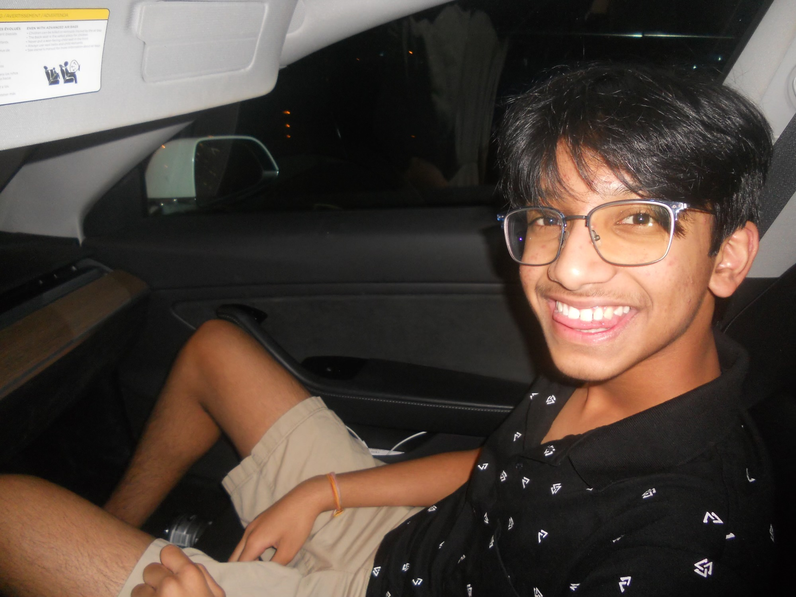
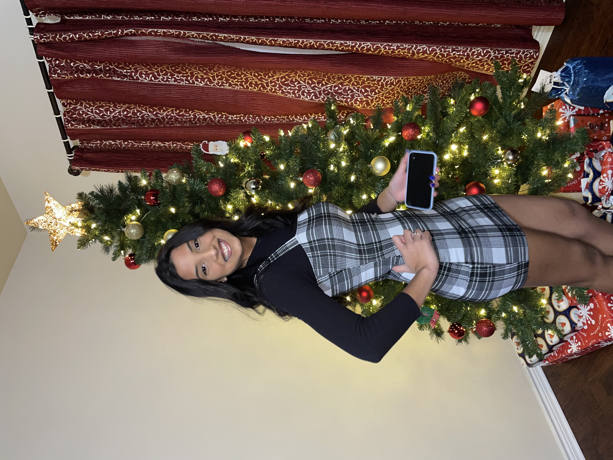
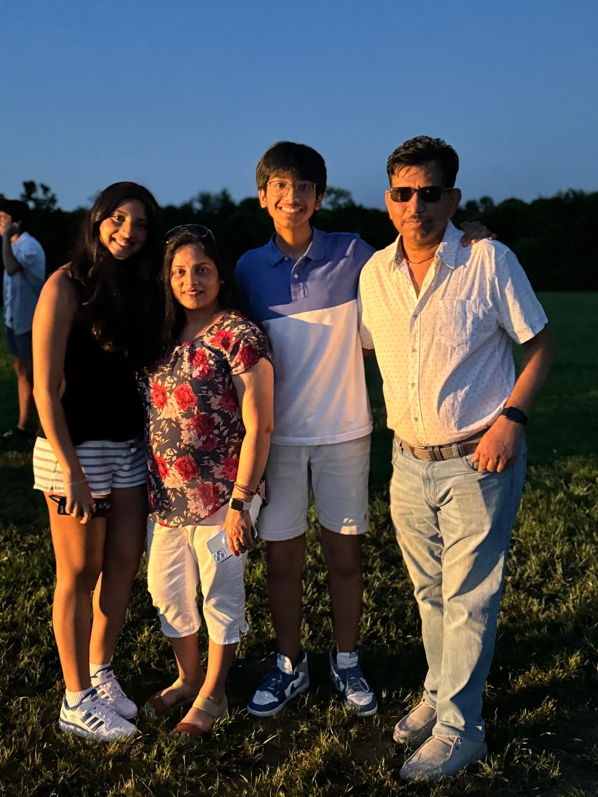
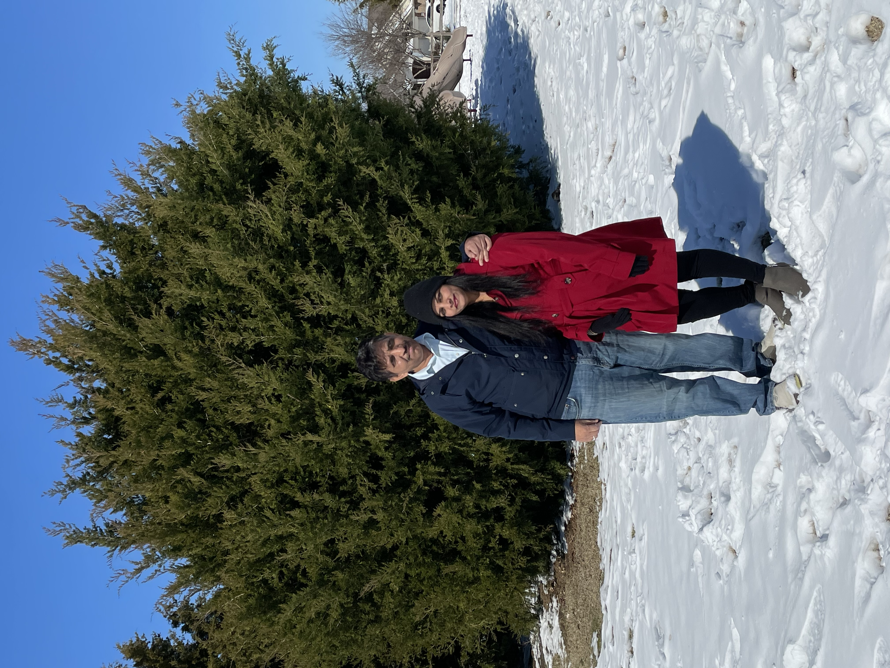

My name is Anish Choudhury!

WHATS UP!
My life started in a small apartment in Rochester, New York. However, I consider Texas as my now home as I moved from New York to Texas when I was really young. I love science. I love math. I love engineering. I also love computer science. I am in ICI (Inclusive Computing Initiative), Robotics, Cyber Scholars. Life has been pretty fun so far! I hope I can make my life more fun though! My ethnicity is Indian. Specifically Odia. I am an outlier when I visit because I was gifted with great height that my fellow Odias were not so greatly gifted :( Computer Science and Engineering are my passions which I wish to explore further! I am looking forward to starting college next year. Fingers crossed UT or A&M, but we will see :)
My family consists of 4 people, my mom, my dad, and my sister, Anmol. Eventhough I have reached the age where I get easily frustrated at my family, I still love them! My sister is one of my idols. She is hard-working and overall awesome. I also heavily look up to my dad. I am extremely proud of him as when he moved to America with my mom and my sister, my family was barely getting by. Look at us now! I am also extraordinarily gifted by my mother. My mom does so much for me and my family; I cannot take her for granted.



I really enjoy listening to music. WOLF, by Tyler the Creator, is by far my favorite album. Some other albums I enjoy are Late Registration by Kanye West and To Pimp a Butterfly by Kendrick Lamar.